Round 288. "fix the spacing around the recently redone characters." Which characters those are was read off the fonts rather than off memory: diffed against the build from before round 268, the roman moved J M a f r s y 3 5 and the cent, the italic moved J c f h i j k l m n r s u v w x y 2 3 and the dotless i. Every one of them was then measured on its own two flanks — closest approach in two dimensions, by class and side, which is the only one of this project’s four spacing measures that can see an open shape — against the lowercase median of 0.108 em in the roman and 0.098 in the italic. Eleven flanks were off by more than a hundredth of an em. They are now on the median. Letters the recent rounds never touched were left alone even where they measure off, because that is a different job.
| letter | flank | was | now | delta |
|---|---|---|---|---|
| roman f | right | 0.093 | 0.110 | +16 |
| roman r | right | 0.094 | 0.108 | +15 |
| italic f | right | 0.068 | 0.099 | +45 |
| italic x | right | 0.082 | 0.100 | +17 |
| italic w | right / left | 0.086 / 0.088 | 0.098 / 0.098 | +13 / +11 |
| italic v | left | 0.085 | 0.098 | +14 |
| italic c | right | 0.123 | 0.098 | −27 |
| italic y | right | 0.116 | 0.097 | −19 |
| italic i | right | 0.089 | 0.099 | +10 |
| italic m | right | 0.090 | 0.101 | +9 |
The italic j was laddered at −16 and put back: its left was only 0.015 loose, and tightening it closed Rj, 4j and qj onto the touch sweep. That is a bad trade for a mild looseness, and it is recorded rather than quietly dropped.
The ff ligature is the one f-ligature that ENDS in an f, so its right side is the f’s; the other four end in an i or an l. It is fitted independently, so it did not pick up the f’s +16, and the collision sweep — whose pair white is the shaped advance of the two glyphs, which puts the ligature’s advance against the plain f’s — read ff as newly touching at every roman weight while the ligature’s own drawing had not moved a unit. The +16 on the ligature is the real fix rather than the tool’s: after an ff the next letter now stands where it stands after a plain f.
| font | touching, before | after | under the floor, before | after |
|---|---|---|---|---|
| roman 200 | 2 — fT, VI | 1 — VI | 17 | 3 |
| roman 400 | 3 — fT, VI, ff | 2 — VI, ff | 5 | 4 |
| roman 700 | 4 | 4 | 6 | 6 |
| roman 900 | 5 | 5 | 6 | 6 |
| italic 400 | 0 | 0 | 1 | 0 |
| bold italic | 0 | 0 | 0 | 0 |
fT clears at the 200 and the 400, where the f’s hook had been touching the T’s arm. Nothing new touches anywhere. Glitch counts, counter dents and the figure spread are all at their baselines, and no kern pair changed in any of the six fonts.
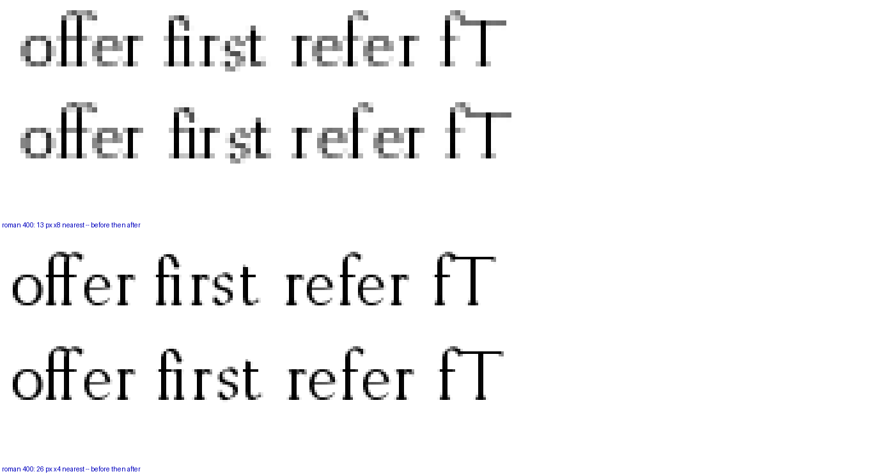
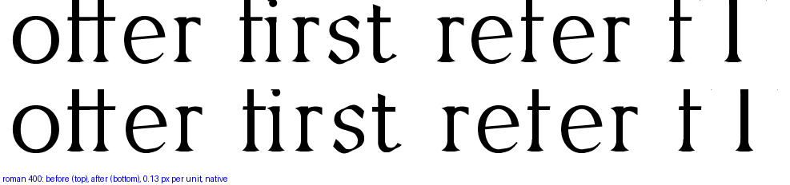
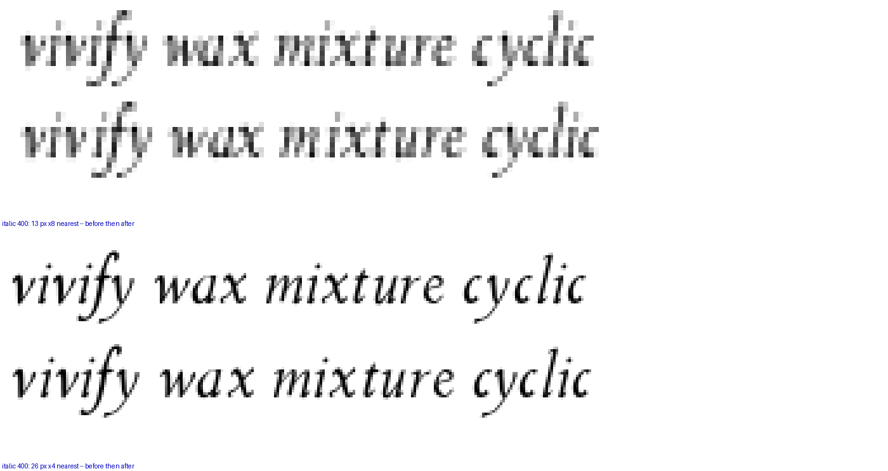
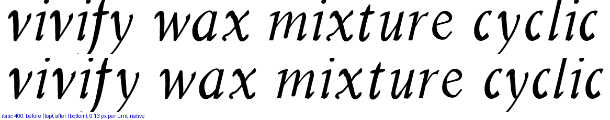
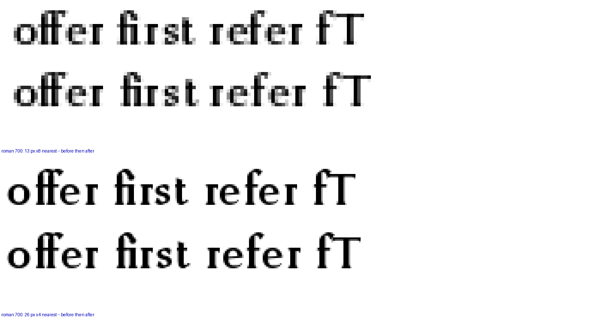
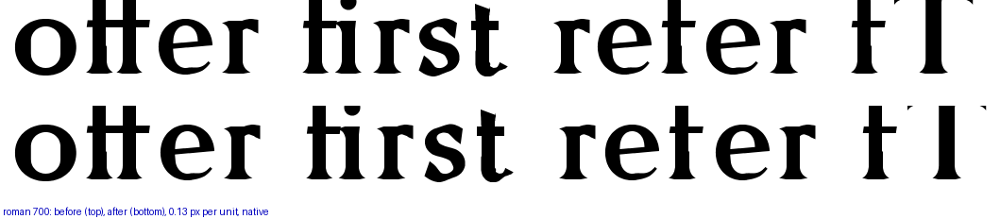
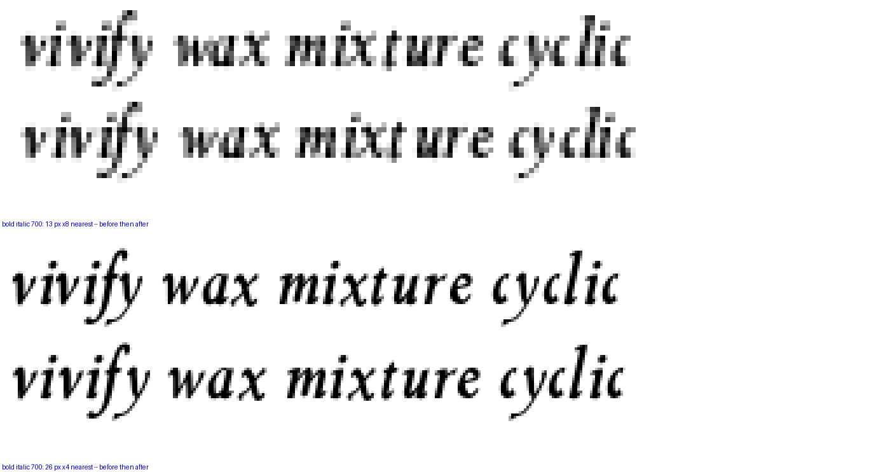
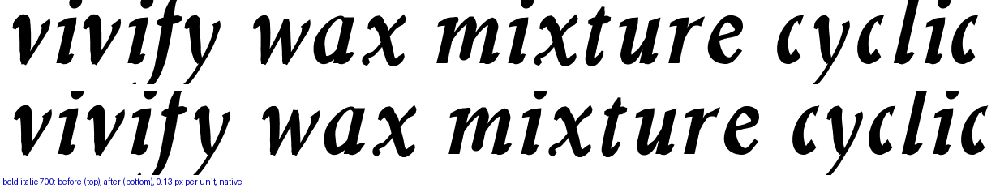
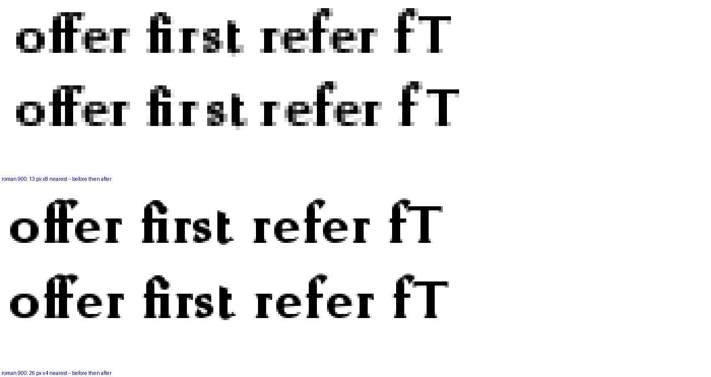
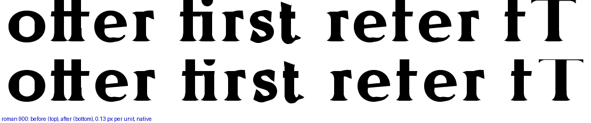
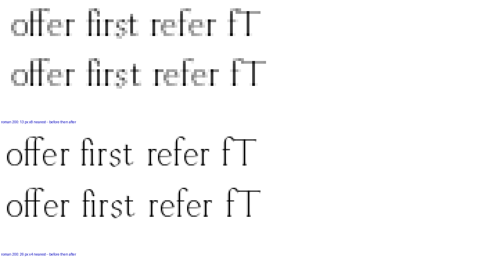
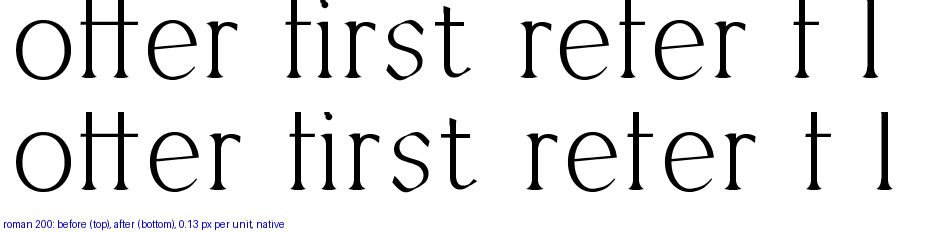